Inscribed AnglesGóc nội tiếp
Grade 9 · Topic: Circumcircle and IncircleLớp 9 · Chủ đề: Đường tròn ngoại tiếp và đường tròn nội tiếp
1Lesson IntroductionGiới thiệu bài học
Learning goalsMục tiêu bài học
By the end of this lesson you can:
Sau bài học này, em có thể:
recognize an inscribed angle and the arc it intercepts;
nhận biết được góc nội tiếp và cung bị chắn;
know that an inscribed angle is half its intercepted arc, and the corollaries;
biết số đo góc nội tiếp bằng nửa số đo cung bị chắn và các hệ quả;
compute angles and prove that two angles are equal;
tính được số đo góc, chứng minh được hai góc bằng nhau;
solve multi-step problems and real situations (viewing angles).
giải được bài toán nhiều bước và tình huống thực tế (góc nhìn).
2Mathematical VocabularyTừ vựng Toán học
inscribed angle – an angle whose vertex is on the circle and whose sides contain two chords.
Góc nội tiếp – góc có đỉnh nằm trên đường tròn và hai cạnh chứa hai dây của đường tròn đó.
intercepted arc – the arc inside the angle (its endpoints are on the sides).
Cung bị chắn – cung nằm bên trong góc (hai đầu mút nằm trên hai cạnh của góc).
subtend – an angle subtends (intercepts) an arc.
Chắn – góc chắn một cung.
central angle – an angle with its vertex at the center.
Góc ở tâm – góc có đỉnh trùng với tâm đường tròn.
semicircle – the arc cut off by a diameter (\(180^\circ\)).
Nửa đường tròn – cung bị chia bởi một đường kính (\(180^\circ\)).
3Useful English PhrasesCụm từ tiếng Anh thường gặp
\(\widehat{BAC}\) is an inscribed angle subtending the arc \(BC\).
\(\widehat{BAC}\) là góc nội tiếp chắn cung \(BC\).
An inscribed angle is half of its intercepted arc.
Số đo góc nội tiếp bằng nửa số đo cung bị chắn.
Angles subtended by the same arc are equal.
Các góc nội tiếp cùng chắn một cung thì bằng nhau.
The angle in a semicircle is a right angle.
Góc nội tiếp chắn nửa đường tròn là góc vuông.
Prove that \(\widehat{MAC}=\widehat{MDB}\).
Chứng minh rằng \(\widehat{MAC}=\widehat{MDB}\).
4Prerequisite ReviewÔn tập kiến thức nền
Lesson 14. The minor arc \(AB\) has the same measure as the central angle \(\widehat{AOB}\); the major arc measures \(360^\circ\) minus it. Notation: \(m\overset{\frown}{AB}\).
Bài 14. Số đo cung nhỏ \(AB\) bằng số đo góc ở tâm \(\widehat{AOB}\); số đo cung lớn bằng \(360^\circ\) trừ số đo cung nhỏ. Kí hiệu: \(\text{sđ}\,\overset{\frown}{AB}\).
Triangles. The angles of a triangle add up to \(180^\circ\); in an isosceles triangle the base angles are equal.
Tam giác. Tổng ba góc của tam giác bằng \(180^\circ\); tam giác cân có hai góc ở đáy bằng nhau.
5TheoryLý thuyết
5.1 Inscribed anglesGóc nội tiếp
DefinitionĐịnh nghĩa
An inscribed angle is an angle whose vertex lies on the circle and whose two sides contain two chords of the circle. The arc inside the angle is the intercepted arc.
Góc nội tiếp là góc có đỉnh nằm trên đường tròn và hai cạnh chứa hai dây cung của đường tròn đó. Cung nằm bên trong góc gọi là cung bị chắn.
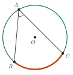
5.2 The inscribed angle theoremĐịnh lí về góc nội tiếp
TheoremĐịnh lí
The measure of an inscribed angle is half the measure of its intercepted arc.
Trong một đường tròn, số đo của góc nội tiếp bằng nửa số đo của cung bị chắn.
In the figure below the arc \(AB\) (not containing \(C\), \(D\), \(E\)) measures \(80^\circ\); the three inscribed angles with vertices \(C\), \(D\), \(E\) all measure \(40^\circ\).
Trong hình dưới, cung \(AB\) (không chứa \(C\), \(D\), \(E\)) có số đo \(80^\circ\); ba góc nội tiếp có đỉnh \(C\), \(D\), \(E\) đều bằng \(40^\circ\).
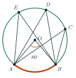
5.3 CorollariesHệ quả
In a circleTrong một đường tròn
Inscribed angles subtending the same arc (or equal arcs) are equal.
Các góc nội tiếp cùng chắn một cung hoặc chắn các cung bằng nhau thì bằng nhau.
An inscribed angle (at most \(90^\circ\)) is half the central angle subtending the same arc: \(\widehat{ACB}=\tfrac12\widehat{AOB}\).
Góc nội tiếp (không quá \(90^\circ\)) có số đo bằng nửa số đo góc ở tâm cùng chắn một cung: \(\widehat{ACB}=\tfrac12\widehat{AOB}\).
An inscribed angle subtending a semicircle is a right angle.
Góc nội tiếp chắn nửa đường tròn là góc vuông.
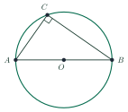
6Worked ExamplesVí dụ có lời giải
ExampleVí dụ 1RememberingNhận biết – Recognizing inscribed anglesNhận biết góc nội tiếp
In the figure of 5.2, name three inscribed angles and the arc they intercept. Is \(\widehat{AOB}\) an inscribed angle?
Trong hình ở mục 5.2, hãy kể tên ba góc nội tiếp và cung bị chắn bởi chúng. Góc \(\widehat{AOB}\) có phải góc nội tiếp không?
Analysis: Check: is the vertex on the circle? Are the sides chords?
Phân tích: Kiểm tra: đỉnh có nằm trên đường tròn không? Hai cạnh có chứa hai dây không?
\(\widehat{ACB}\), \(\widehat{ADB}\), \(\widehat{AEB}\): the vertices are on the circle and the sides are chords; they intercept the arc \(AB\).
\(\widehat{ACB}\), \(\widehat{ADB}\), \(\widehat{AEB}\): đỉnh nằm trên đường tròn, hai cạnh là dây; chúng cùng chắn cung \(AB\).
\(\widehat{AOB}\) has its vertex at the center: it is a central angle, not an inscribed angle.
\(\widehat{AOB}\) có đỉnh là tâm: đó là góc ở tâm, không phải góc nội tiếp.
\(\widehat{ACB}\), \(\widehat{ADB}\), \(\widehat{AEB}\) (arc \(AB\)); no.
\(\widehat{ACB}\), \(\widehat{ADB}\), \(\widehat{AEB}\) (chắn cung \(AB\)); không.
ExampleVí dụ 2UnderstandingThông hiểu – Using the theoremÁp dụng định lí
In the figure, \(\widehat{AOB}=100^\circ\) and \(C\) lies on the major arc \(AB\). Find \(\widehat{ACB}\) and the measure of the major arc \(AB\).
Trong hình, \(\widehat{AOB}=100^\circ\) và \(C\) nằm trên cung lớn \(AB\). Tính \(\widehat{ACB}\) và số đo cung lớn \(AB\).
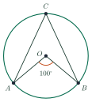
Analysis: The minor arc \(AB\) has the same measure as the central angle.
Phân tích: Số đo cung nhỏ \(AB\) bằng số đo góc ở tâm.
\(m\overset{\frown}{AB}=100^\circ\) (minor arc), so \(\widehat{ACB}=\dfrac{100^\circ}{2}=50^\circ\).
\(\text{sđ}\,\overset{\frown}{AB}=100^\circ\) (cung nhỏ), nên \(\widehat{ACB}=\dfrac{100^\circ}{2}=50^\circ\).
Major arc \(AB\): \(360^\circ-100^\circ=260^\circ\).
Cung lớn \(AB\): \(360^\circ-100^\circ=260^\circ\).
\(50^\circ\); \(260^\circ\).
\(50^\circ\); \(260^\circ\).
ExampleVí dụ 3Basic applicationVận dụng thấp – A diameterĐường kính
\(AB\) is a diameter of \((O)\); \(C\), \(D\) are points of the circle on different sides of \(AB\); \(\widehat{ABC}=35^\circ\). Find \(\widehat{ACB}\), \(\widehat{BAC}\) and \(\widehat{ADC}\).
\(AB\) là đường kính của \((O)\); \(C\), \(D\) là hai điểm của đường tròn nằm khác phía đối với \(AB\); \(\widehat{ABC}=35^\circ\). Tính \(\widehat{ACB}\), \(\widehat{BAC}\) và \(\widehat{ADC}\).
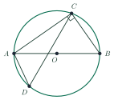
Analysis: \(\widehat{ACB}\) subtends a semicircle; \(\widehat{ADC}\) and \(\widehat{ABC}\) subtend the same arc \(AC\).
Phân tích: \(\widehat{ACB}\) chắn nửa đường tròn; \(\widehat{ADC}\) và \(\widehat{ABC}\) cùng chắn cung \(AC\).
\(\widehat{ACB}=90^\circ\) (angle in a semicircle).
\(\widehat{ACB}=90^\circ\) (góc nội tiếp chắn nửa đường tròn).
In the right triangle \(ABC\): \(\widehat{BAC}=90^\circ-35^\circ=55^\circ\).
Trong tam giác vuông \(ABC\): \(\widehat{BAC}=90^\circ-35^\circ=55^\circ\).
\(\widehat{ADC}=\widehat{ABC}=35^\circ\) (same arc \(AC\)).
\(\widehat{ADC}=\widehat{ABC}=35^\circ\) (cùng chắn cung \(AC\)).
\(90^\circ\), \(55^\circ\), \(35^\circ\).
\(90^\circ\), \(55^\circ\), \(35^\circ\).
ExampleVí dụ 4Basic applicationVận dụng thấp – Two chordsHai dây cắt nhau
The chords \(AB\) and \(CD\) of a circle meet at \(M\). Prove that \(\widehat{MAC}=\widehat{MDB}\) and \(MA\cdot MB=MC\cdot MD\).
Hai dây \(AB\) và \(CD\) của một đường tròn cắt nhau tại \(M\). Chứng minh rằng \(\widehat{MAC}=\widehat{MDB}\) và \(MA\cdot MB=MC\cdot MD\).
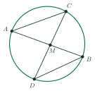
Analysis: Find two inscribed angles that subtend the same arc, then use similar triangles.
Phân tích: Tìm hai góc nội tiếp cùng chắn một cung rồi dùng tam giác đồng dạng.
\(\widehat{BAC}\) and \(\widehat{BDC}\) both subtend the arc \(BC\), so \(\widehat{MAC}=\widehat{MDB}\).
\(\widehat{BAC}\) và \(\widehat{BDC}\) cùng chắn cung \(BC\) nên \(\widehat{MAC}=\widehat{MDB}\).
Also \(\widehat{AMC}=\widehat{DMB}\) (vertical angles). Hence \(\triangle MAC\backsim\triangle MDB\) and \(\dfrac{MA}{MD}=\dfrac{MC}{MB}\), that is \(MA\cdot MB=MC\cdot MD\).
Lại có \(\widehat{AMC}=\widehat{DMB}\) (đối đỉnh). Do đó \(\triangle MAC\backsim\triangle MDB\), suy ra \(\dfrac{MA}{MD}=\dfrac{MC}{MB}\), tức là \(MA\cdot MB=MC\cdot MD\).
Proved.
Đã chứng minh.
ExampleVí dụ 5ApplicationVận dụng – Placing a cameraĐặt máy quay
The front edge \(AB=8\) m of a stage is a chord of a circle \((O)\) with \(\widehat{AOB}=120^\circ\). A camera must see \(AB\) under an angle of \(60^\circ\).
(a) Where on the audience side can it be placed?
(b) Find the radius of the circle (to one decimal place).
Mép sân khấu \(AB=8\) m là một dây của đường tròn \((O)\) với \(\widehat{AOB}=120^\circ\). Máy quay cần nhìn \(AB\) dưới góc \(60^\circ\).
a) Có thể đặt máy quay ở đâu (phía khán giả)?
b) Tính bán kính đường tròn (làm tròn đến hàng phần mười).
Analysis: Every inscribed angle on the major arc \(AB\) is half of \(120^\circ\).
Phân tích: Mọi góc nội tiếp có đỉnh trên cung lớn \(AB\) đều bằng nửa của \(120^\circ\).
(a) At any point \(C\) of the major arc \(AB\): \(\widehat{ACB}=\dfrac{120^\circ}{2}=60^\circ\).
a) Tại bất kì điểm \(C\) nào trên cung lớn \(AB\): \(\widehat{ACB}=\dfrac{120^\circ}{2}=60^\circ\).
(b) Let \(H\) be the midpoint of \(AB\): \(OH\perp AB\), \(\widehat{AOH}=60^\circ\), \(AH=4\) m. So \(R=OA=\dfrac{AH}{\sin60^\circ}=\dfrac{8}{\sqrt3}\approx4.6\) m.
b) Gọi \(H\) là trung điểm \(AB\): \(OH\perp AB\), \(\widehat{AOH}=60^\circ\), \(AH=4\) m. Do đó \(R=OA=\dfrac{AH}{\sin60^\circ}=\dfrac{8}{\sqrt3}\approx4{,}6\) m.
(a) On the major arc \(AB\);
(b) about 4.6 m.
a) Trên cung lớn \(AB\);
b) khoảng 4,6 m.
7PracticeBài tập luyện tập
A. Multiple ChoiceA. Trắc nghiệm nhiều lựa chọn
In the figure, \(A\), \(B\), \(C\), \(E\) lie on the circle with center \(O\). Which angle is an inscribed angle?
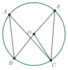
Trong hình vẽ, \(A\), \(B\), \(C\), \(E\) nằm trên đường tròn tâm \(O\). Góc nào là góc nội tiếp?
Answer: c. \(\widehat{BAC}\) has its vertex \(A\) on the circle and its sides contain the chords \(AB\), \(AC\). \(\widehat{BOC}\) is a central angle; the side \(BO\) of \(\widehat{OBC}\) is not a chord.
Đáp án c. \(\widehat{BAC}\) có đỉnh \(A\) nằm trên đường tròn và hai cạnh chứa hai dây \(AB\), \(AC\). \(\widehat{BOC}\) là góc ở tâm; cạnh \(BO\) của \(\widehat{OBC}\) không phải là dây.
The inscribed angle \(\widehat{BDC}\) intercepts the arc \(\overset{\frown}{BC}\) with \(m\overset{\frown}{BC}=98^\circ\). Find \(\widehat{BDC}\).
Góc nội tiếp \(\widehat{BDC}\) chắn cung \(\overset{\frown}{BC}\) có \(\text{sđ}\,\overset{\frown}{BC}=98^\circ\). Tính \(\widehat{BDC}\).
Answer: b. An inscribed angle is half its intercepted arc: \(\dfrac{98^\circ}{2}=49^\circ\).
Đáp án b. Số đo góc nội tiếp bằng nửa số đo cung bị chắn: \(\dfrac{98^\circ}{2}=49^\circ\).
In the figure, \(\widehat{AOB}=56^\circ\) and \(C\) lies on the major arc \(AB\). Find \(\widehat{ACB}\).
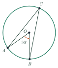
Trong hình vẽ, \(\widehat{AOB}=56^\circ\) và \(C\) nằm trên cung lớn \(AB\). Tính \(\widehat{ACB}\).
Answer: b. \(\widehat{ACB}\) and the central angle \(\widehat{AOB}\) intercept the same arc: \(\widehat{ACB}=\dfrac{56^\circ}{2}=28^\circ\).
Đáp án b. Góc nội tiếp \(\widehat{ACB}\) và góc ở tâm \(\widehat{AOB}\) cùng chắn cung \(AB\): \(\widehat{ACB}=\dfrac{56^\circ}{2}=28^\circ\).
B. True or FalseB. Đúng hoặc sai
In the figure, \(C\) and \(D\) lie on the same arc \(AB\) and \(\widehat{ACB}=57^\circ\). Then \(\widehat{ADB}=57^\circ\).
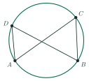
Trong hình vẽ, \(C\) và \(D\) nằm trên cùng một cung \(AB\) và \(\widehat{ACB}=57^\circ\). Khi đó \(\widehat{ADB}=57^\circ\).
True. Inscribed angles intercepting the same arc are equal: \(\widehat{ADB}=\widehat{ACB}=57^\circ\).
Đúng. Các góc nội tiếp cùng chắn một cung thì bằng nhau: \(\widehat{ADB}=\widehat{ACB}=57^\circ\).
In the figure, \(AB\) is a diameter and \(\widehat{CAB}=49^\circ\). Then \(\widehat{CBA}=41^\circ\).
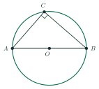
Trong hình vẽ, \(AB\) là đường kính và \(\widehat{CAB}=49^\circ\). Khi đó \(\widehat{CBA}=41^\circ\).
True. \(\widehat{ACB}=90^\circ\) (semicircle), so \(\widehat{CBA}=90^\circ-49^\circ=41^\circ\).
Đúng. \(\widehat{ACB}=90^\circ\) (chắn nửa đường tròn) nên \(\widehat{CBA}=90^\circ-49^\circ=41^\circ\).
C. Short AnswerC. Trả lời ngắn
In the figure, \(AB\) is a diameter of \((O)\) and \(\widehat{ABC}=37^\circ\). Find \(\widehat{BAC}\) (in degrees).
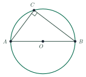
Trong hình vẽ, \(AB\) là đường kính của \((O)\) và \(\widehat{ABC}=37^\circ\). Tính số đo \(\widehat{BAC}\) (độ).
Enter a number.
Nhập một số.
Answer: 53. \(\widehat{ACB}=90^\circ\); \(\widehat{BAC}=90^\circ-37^\circ=53^\circ\).
Đáp số: 53. \(\widehat{ACB}=90^\circ\); \(\widehat{BAC}=90^\circ-37^\circ=53^\circ\).
The inscribed angle \(\widehat{ANB}=33^\circ\) intercepts the minor arc \(AB\). Find the measure of the minor arc \(AB\) (in degrees).
Góc nội tiếp \(\widehat{ANB}=33^\circ\) chắn cung nhỏ \(AB\). Tính số đo cung nhỏ \(AB\) (độ).
Enter a number.
Nhập một số.
Answer: 66. The arc is twice the inscribed angle: \(2\cdot33^\circ=66^\circ\).
Đáp số: 66. Số đo cung bị chắn gấp đôi góc nội tiếp: \(2\cdot33^\circ=66^\circ\).
D1. Self-practice – RememberingD1. Tự luyện – Mức Nhận biết
\(A\), \(B\), \(C\) lie on a circle. Which arc does the inscribed angle \(\widehat{BAC}\) intercept?
\(A\), \(B\), \(C\) nằm trên một đường tròn. Góc nội tiếp \(\widehat{BAC}\) chắn cung nào?
Answer: b. The intercepted arc lies inside the angle, between \(B\) and \(C\) (not containing \(A\)).
Đáp án b. Cung bị chắn nằm bên trong góc, nối \(B\) và \(C\) (không chứa \(A\)).
\(EF\) is a diameter of a circle and \(K\) is another point of the circle. What is the measure of \(\widehat{EKF}\)?
\(EF\) là một đường kính của đường tròn, \(K\) là một điểm khác của đường tròn. Số đo của \(\widehat{EKF}\) bằng bao nhiêu?
Answer: d. It intercepts a semicircle (\(180^\circ\)): \(\dfrac{180^\circ}{2}=90^\circ\).
Đáp án d. Góc này chắn nửa đường tròn (\(180^\circ\)): \(\dfrac{180^\circ}{2}=90^\circ\).
The inscribed angle \(\widehat{ACB}\) intercepts the arc \(AB\) (\(m\overset{\frown}{AB}\) is its measure). Then…
Góc nội tiếp \(\widehat{ACB}\) chắn cung \(AB\) (\(m\overset{\frown}{AB}\) là số đo cung đó). Khi đó…
Answer: b. An inscribed angle is half the central angle (and half the arc) it intercepts.
Đáp án b. Góc nội tiếp bằng nửa góc ở tâm (và bằng nửa số đo cung) cùng chắn một cung.
D2. Self-practice – UnderstandingD2. Tự luyện – Mức Thông hiểu
In the figure, \(\widehat{AOB}=148^\circ\) and \(C\) lies on the minor arc \(AB\). Find \(\widehat{ACB}\).
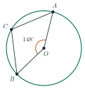
Trong hình vẽ, \(\widehat{AOB}=148^\circ\) và \(C\) nằm trên cung nhỏ \(AB\). Tính \(\widehat{ACB}\).
Answer: c. \(\widehat{ACB}\) intercepts the major arc \(AB\) of \(360^\circ-148^\circ=212^\circ\): \(\widehat{ACB}=106^\circ\).
Đáp án c. \(\widehat{ACB}\) chắn cung lớn \(AB\) có số đo \(360^\circ-148^\circ=212^\circ\): \(\widehat{ACB}=106^\circ\).
Points \(A\), \(B\), \(C\) divide a circle into three arcs \(AB\), \(BC\), \(CA\) in the ratio \(2:4:6\). Find the largest angle of triangle \(ABC\).
Ba điểm \(A\), \(B\), \(C\) chia đường tròn thành ba cung \(AB\), \(BC\), \(CA\) tỉ lệ với \(2:4:6\). Tính góc lớn nhất của tam giác \(ABC\).
Answer: b. The arcs are \(60^\circ\), \(120^\circ\), \(180^\circ\); each angle of the triangle is half the arc opposite it: \(30^\circ\), \(60^\circ\), \(90^\circ\).
Đáp án b. Ba cung có số đo \(60^\circ\), \(120^\circ\), \(180^\circ\); mỗi góc của tam giác bằng nửa cung bị chắn: \(30^\circ\), \(60^\circ\), \(90^\circ\).
\(AB\) is a chord of \((O)\) with \(\widehat{OAB}=48^\circ\); \(C\) lies on the major arc \(AB\). Find \(\widehat{ACB}\).
\(AB\) là một dây của \((O)\) với \(\widehat{OAB}=48^\circ\); \(C\) nằm trên cung lớn \(AB\). Tính \(\widehat{ACB}\).
Answer: d. \(OA=OB\) so \(\widehat{AOB}=180^\circ-2\cdot48^\circ=84^\circ\); \(\widehat{ACB}=\dfrac{84^\circ}{2}=42^\circ\).
Đáp án d. \(OA=OB\) nên \(\widehat{AOB}=180^\circ-2\cdot48^\circ=84^\circ\); \(\widehat{ACB}=\dfrac{84^\circ}{2}=42^\circ\).
D3. Self-practice – Basic applicationD3. Tự luyện – Mức Vận dụng thấp
Triangle \(ABC\) is inscribed in \((O)\), \(\widehat{BAC}=52^\circ\), \(\widehat{ABC}=79^\circ\). Find the measure of the arc \(BC\) not containing the third vertex.
Tam giác \(ABC\) nội tiếp đường tròn \((O)\), \(\widehat{BAC}=52^\circ\), \(\widehat{ABC}=79^\circ\). Tính số đo cung \(BC\) không chứa đỉnh còn lại.
Answer: c. \(\widehat{ACB}=180^\circ-52^\circ-79^\circ=49^\circ\). The arc BC is twice the opposite angle: \(104^\circ\).
Đáp án c. \(\widehat{ACB}=180^\circ-52^\circ-79^\circ=49^\circ\). Cung BC có số đo gấp đôi góc đối diện: \(104^\circ\).
In the figure, \(A\), \(B\), \(C\), \(D\) lie on a circle in this order, \(\widehat{BAC}=45^\circ\) and \(\widehat{ACB}=56^\circ\). Find \(\widehat{ADC}\).
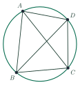
Trong hình vẽ, \(A\), \(B\), \(C\), \(D\) nằm trên một đường tròn theo thứ tự đó, \(\widehat{BAC}=45^\circ\) và \(\widehat{ACB}=56^\circ\). Tính \(\widehat{ADC}\).
Answer: b. \(\widehat{BDC}=\widehat{BAC}=45^\circ\) (same arc \(BC\)); \(\widehat{ADB}=\widehat{ACB}=56^\circ\) (same arc \(AB\)); \(\widehat{ADC}=45^\circ+56^\circ=101^\circ\).
Đáp án b. \(\widehat{BDC}=\widehat{BAC}=45^\circ\) (cùng chắn cung \(BC\)); \(\widehat{ADB}=\widehat{ACB}=56^\circ\) (cùng chắn cung \(AB\)); \(\widehat{ADC}=45^\circ+56^\circ=101^\circ\).
On a round clock face, \(P\) is at the number 12, \(M\) at the number 3 and \(N\) at the number 5. Find \(\widehat{MPN}\).
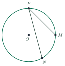
Trên mặt đồng hồ hình tròn, điểm \(P\) ở số 12, điểm \(M\) ở số 3 và điểm \(N\) ở số 5. Tính \(\widehat{MPN}\).
Answer: a. Neighboring numbers are \(30^\circ\) apart, so the arc \(MN\) not containing \(P\) is \(2\cdot30^\circ=60^\circ\); \(\widehat{MPN}=\dfrac{60^\circ}{2}=30^\circ\).
Đáp án a. Hai số liền nhau cách nhau \(30^\circ\) nên cung \(MN\) không chứa \(P\) có số đo \(2\cdot30^\circ=60^\circ\); \(\widehat{MPN}=\dfrac{60^\circ}{2}=30^\circ\).
D4. Self-practice – Advanced applicationD4. Tự luyện – Mức Vận dụng
The front edge \(AB\) of a stage is a chord of a circle with center \(O\) and \(\widehat{AOB}=120^\circ\). The seats \(M\), \(N\) are on the major arc \(AB\). From each seat, under what angle is the stage edge seen?
Mép sân khấu \(AB\) là một dây của đường tròn tâm \(O\) với \(\widehat{AOB}=120^\circ\). Hai ghế \(M\), \(N\) nằm trên cung lớn \(AB\). Từ mỗi ghế, người xem nhìn mép sân khấu dưới góc bao nhiêu độ?
Answer: c. \(\widehat{AMB}\) and \(\widehat{ANB}\) intercept the same arc \(AB\): both equal \(\dfrac{120^\circ}{2}=60^\circ\).
Đáp án c. \(\widehat{AMB}\) và \(\widehat{ANB}\) cùng chắn cung \(AB\): đều bằng \(\dfrac{120^\circ}{2}=60^\circ\).
Triangle \(ABC\) is inscribed in \((O;\,R)\) with \(AB=14\) cm and \(\widehat{ACB}=30^\circ\). Find \(R\).
Tam giác \(ABC\) nội tiếp đường tròn \((O;\,R)\) có \(AB=14\) cm và \(\widehat{ACB}=30^\circ\). Tính \(R\).
Answer: d. \(\widehat{AOB}=2\cdot30^\circ=60^\circ\) and \(OA=OB\): triangle \(OAB\) is equilateral, \(R=AB=14\) cm.
Đáp án d. \(\widehat{AOB}=2\cdot30^\circ=60^\circ\) và \(OA=OB\): tam giác \(OAB\) đều, \(R=AB=14\) cm.
Triangle \(ABC\) is inscribed in \((O)\) and \(\widehat{BAC}=52^\circ\) (acute triangle). Find \(\widehat{OBC}\).
Tam giác nhọn \(ABC\) nội tiếp đường tròn \((O)\) và \(\widehat{BAC}=52^\circ\). Tính \(\widehat{OBC}\).
Answer: c. \(\widehat{BOC}=2\cdot52^\circ=104^\circ\); \(OB=OC\), so \(\widehat{OBC}=\dfrac{180^\circ-104^\circ}{2}=38^\circ\).
Đáp án c. \(\widehat{BOC}=2\cdot52^\circ=104^\circ\); \(OB=OC\) nên \(\widehat{OBC}=\dfrac{180^\circ-104^\circ}{2}=38^\circ\).
A. Multiple ChoiceA. Trắc nghiệm nhiều lựa chọn
In the figure, \(E\), \(F\), \(G\), \(H\) lie on the circle with center \(O\). Which angle is an inscribed angle?
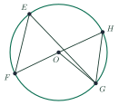
Trong hình vẽ, \(E\), \(F\), \(G\), \(H\) nằm trên đường tròn tâm \(O\). Góc nào là góc nội tiếp?
Answer: c. \(\widehat{FEG}\) has its vertex \(E\) on the circle and its sides contain the chords \(EF\), \(EG\). \(\widehat{FOG}\) is a central angle; the side \(FO\) of \(\widehat{OFG}\) is not a chord.
Đáp án c. \(\widehat{FEG}\) có đỉnh \(E\) nằm trên đường tròn và hai cạnh chứa hai dây \(EF\), \(EG\). \(\widehat{FOG}\) là góc ở tâm; cạnh \(FO\) của \(\widehat{OFG}\) không phải là dây.
The inscribed angle \(\widehat{MCN}\) intercepts the arc \(\overset{\frown}{MN}\) with \(m\overset{\frown}{MN}=136^\circ\). Find \(\widehat{MCN}\).
Góc nội tiếp \(\widehat{MCN}\) chắn cung \(\overset{\frown}{MN}\) có \(\text{sđ}\,\overset{\frown}{MN}=136^\circ\). Tính \(\widehat{MCN}\).
Answer: c. An inscribed angle is half its intercepted arc: \(\dfrac{136^\circ}{2}=68^\circ\).
Đáp án c. Số đo góc nội tiếp bằng nửa số đo cung bị chắn: \(\dfrac{136^\circ}{2}=68^\circ\).
In the figure, \(\widehat{AOB}=76^\circ\) and \(C\) lies on the major arc \(AB\). Find \(\widehat{ACB}\).
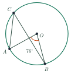
Trong hình vẽ, \(\widehat{AOB}=76^\circ\) và \(C\) nằm trên cung lớn \(AB\). Tính \(\widehat{ACB}\).
Answer: b. \(\widehat{ACB}\) and the central angle \(\widehat{AOB}\) intercept the same arc: \(\widehat{ACB}=\dfrac{76^\circ}{2}=38^\circ\).
Đáp án b. Góc nội tiếp \(\widehat{ACB}\) và góc ở tâm \(\widehat{AOB}\) cùng chắn cung \(AB\): \(\widehat{ACB}=\dfrac{76^\circ}{2}=38^\circ\).
B. True or FalseB. Đúng hoặc sai
In the figure, \(C\) and \(D\) lie on the same arc \(AB\) and \(\widehat{ACB}=60^\circ\). Then \(\widehat{ADB}=60^\circ\).
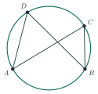
Trong hình vẽ, \(C\) và \(D\) nằm trên cùng một cung \(AB\) và \(\widehat{ACB}=60^\circ\). Khi đó \(\widehat{ADB}=60^\circ\).
True. Inscribed angles intercepting the same arc are equal: \(\widehat{ADB}=\widehat{ACB}=60^\circ\).
Đúng. Các góc nội tiếp cùng chắn một cung thì bằng nhau: \(\widehat{ADB}=\widehat{ACB}=60^\circ\).
\(AB\) is a diameter of circle \((O)\) and \(C\) is a point of the circle (\(C\ne A,\,B\)). Then \(\widehat{ACB}=120^\circ\).
\(AB\) là một đường kính của đường tròn \((O)\), \(C\) là một điểm thuộc đường tròn (\(C\ne A,\,B\)). Khi đó \(\widehat{ACB}=120^\circ\).
False. An inscribed angle intercepting a semicircle is a right angle.
Sai. Góc nội tiếp chắn nửa đường tròn là góc vuông.
C. Short AnswerC. Trả lời ngắn
In the figure, \(AB\) is a diameter of \((O)\) and \(\widehat{ABC}=56^\circ\). Find \(\widehat{BAC}\) (in degrees).
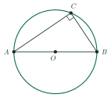
Trong hình vẽ, \(AB\) là đường kính của \((O)\) và \(\widehat{ABC}=56^\circ\). Tính số đo \(\widehat{BAC}\) (độ).
Enter a number.
Nhập một số.
Answer: 34. \(\widehat{ACB}=90^\circ\); \(\widehat{BAC}=90^\circ-56^\circ=34^\circ\).
Đáp số: 34. \(\widehat{ACB}=90^\circ\); \(\widehat{BAC}=90^\circ-56^\circ=34^\circ\).
The inscribed angle \(\widehat{AKB}=77^\circ\) intercepts the minor arc \(AB\). Find the measure of the minor arc \(AB\) (in degrees).
Góc nội tiếp \(\widehat{AKB}=77^\circ\) chắn cung nhỏ \(AB\). Tính số đo cung nhỏ \(AB\) (độ).
Enter a number.
Nhập một số.
Answer: 154. The arc is twice the inscribed angle: \(2\cdot77^\circ=154^\circ\).
Đáp số: 154. Số đo cung bị chắn gấp đôi góc nội tiếp: \(2\cdot77^\circ=154^\circ\).
D1. Self-practice – RememberingD1. Tự luyện – Mức Nhận biết
An angle is called an inscribed angle of a circle when…
Một góc được gọi là góc nội tiếp đường tròn khi…
Answer: d. Definition of an inscribed angle.
Đáp án d. Định nghĩa góc nội tiếp.
\(MN\) is a diameter of a circle and \(P\) is another point of the circle. What is the measure of \(\widehat{MPN}\)?
\(MN\) là một đường kính của đường tròn, \(P\) là một điểm khác của đường tròn. Số đo của \(\widehat{MPN}\) bằng bao nhiêu?
Answer: d. It intercepts a semicircle (\(180^\circ\)): \(\dfrac{180^\circ}{2}=90^\circ\).
Đáp án d. Góc này chắn nửa đường tròn (\(180^\circ\)): \(\dfrac{180^\circ}{2}=90^\circ\).
In \((O)\), the central angle \(\widehat{MON}\) and the inscribed angle \(\widehat{MPN}\) (less than \(90^\circ\)) intercept the same arc. Then…
Trong \((O)\), góc ở tâm \(\widehat{MON}\) và góc nội tiếp \(\widehat{MPN}\) (nhỏ hơn \(90^\circ\)) cùng chắn một cung. Khi đó…
Answer: a. An inscribed angle is half the central angle (and half the arc) it intercepts.
Đáp án a. Góc nội tiếp bằng nửa góc ở tâm (và bằng nửa số đo cung) cùng chắn một cung.
D2. Self-practice – UnderstandingD2. Tự luyện – Mức Thông hiểu
In the figure, \(\widehat{AOB}=144^\circ\) and \(C\) lies on the minor arc \(AB\). Find \(\widehat{ACB}\).
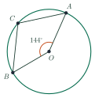
Trong hình vẽ, \(\widehat{AOB}=144^\circ\) và \(C\) nằm trên cung nhỏ \(AB\). Tính \(\widehat{ACB}\).
Answer: a. \(\widehat{ACB}\) intercepts the major arc \(AB\) of \(360^\circ-144^\circ=216^\circ\): \(\widehat{ACB}=108^\circ\).
Đáp án a. \(\widehat{ACB}\) chắn cung lớn \(AB\) có số đo \(360^\circ-144^\circ=216^\circ\): \(\widehat{ACB}=108^\circ\).
Points \(A\), \(B\), \(C\) divide a circle into three arcs \(AB\), \(BC\), \(CA\) in the ratio \(1:2:6\). Find the smallest angle of triangle \(ABC\).
Ba điểm \(A\), \(B\), \(C\) chia đường tròn thành ba cung \(AB\), \(BC\), \(CA\) tỉ lệ với \(1:2:6\). Tính góc nhỏ nhất của tam giác \(ABC\).
Answer: c. The arcs are \(40^\circ\), \(80^\circ\), \(240^\circ\); each angle of the triangle is half the arc opposite it: \(20^\circ\), \(40^\circ\), \(120^\circ\).
Đáp án c. Ba cung có số đo \(40^\circ\), \(80^\circ\), \(240^\circ\); mỗi góc của tam giác bằng nửa cung bị chắn: \(20^\circ\), \(40^\circ\), \(120^\circ\).
\(AB\) is a chord of \((O)\) with \(\widehat{OAB}=37^\circ\); \(C\) lies on the major arc \(AB\). Find \(\widehat{ACB}\).
\(AB\) là một dây của \((O)\) với \(\widehat{OAB}=37^\circ\); \(C\) nằm trên cung lớn \(AB\). Tính \(\widehat{ACB}\).
Answer: b. \(OA=OB\) so \(\widehat{AOB}=180^\circ-2\cdot37^\circ=106^\circ\); \(\widehat{ACB}=\dfrac{106^\circ}{2}=53^\circ\).
Đáp án b. \(OA=OB\) nên \(\widehat{AOB}=180^\circ-2\cdot37^\circ=106^\circ\); \(\widehat{ACB}=\dfrac{106^\circ}{2}=53^\circ\).
D3. Self-practice – Basic applicationD3. Tự luyện – Mức Vận dụng thấp
Triangle \(ABC\) is inscribed in \((O)\), \(\widehat{BAC}=40^\circ\), \(\widehat{ABC}=48^\circ\). Find the measure of the arc \(BC\) not containing the third vertex.
Tam giác \(ABC\) nội tiếp đường tròn \((O)\), \(\widehat{BAC}=40^\circ\), \(\widehat{ABC}=48^\circ\). Tính số đo cung \(BC\) không chứa đỉnh còn lại.
Answer: a. \(\widehat{ACB}=180^\circ-40^\circ-48^\circ=92^\circ\). The arc BC is twice the opposite angle: \(80^\circ\).
Đáp án a. \(\widehat{ACB}=180^\circ-40^\circ-48^\circ=92^\circ\). Cung BC có số đo gấp đôi góc đối diện: \(80^\circ\).
In the figure, \(A\), \(B\), \(C\), \(D\) lie on a circle in this order, \(\widehat{BAC}=46^\circ\) and \(\widehat{ACB}=58^\circ\). Find \(\widehat{ADC}\).
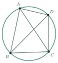
Trong hình vẽ, \(A\), \(B\), \(C\), \(D\) nằm trên một đường tròn theo thứ tự đó, \(\widehat{BAC}=46^\circ\) và \(\widehat{ACB}=58^\circ\). Tính \(\widehat{ADC}\).
Answer: c. \(\widehat{BDC}=\widehat{BAC}=46^\circ\) (same arc \(BC\)); \(\widehat{ADB}=\widehat{ACB}=58^\circ\) (same arc \(AB\)); \(\widehat{ADC}=46^\circ+58^\circ=104^\circ\).
Đáp án c. \(\widehat{BDC}=\widehat{BAC}=46^\circ\) (cùng chắn cung \(BC\)); \(\widehat{ADB}=\widehat{ACB}=58^\circ\) (cùng chắn cung \(AB\)); \(\widehat{ADC}=46^\circ+58^\circ=104^\circ\).
On a round clock face, \(P\) is at the number 12, \(M\) at the number 4 and \(N\) at the number 6. Find \(\widehat{MPN}\).
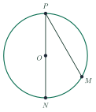
Trên mặt đồng hồ hình tròn, điểm \(P\) ở số 12, điểm \(M\) ở số 4 và điểm \(N\) ở số 6. Tính \(\widehat{MPN}\).
Answer: a. Neighboring numbers are \(30^\circ\) apart, so the arc \(MN\) not containing \(P\) is \(2\cdot30^\circ=60^\circ\); \(\widehat{MPN}=\dfrac{60^\circ}{2}=30^\circ\).
Đáp án a. Hai số liền nhau cách nhau \(30^\circ\) nên cung \(MN\) không chứa \(P\) có số đo \(2\cdot30^\circ=60^\circ\); \(\widehat{MPN}=\dfrac{60^\circ}{2}=30^\circ\).
D4. Self-practice – Advanced applicationD4. Tự luyện – Mức Vận dụng
A camera must see the stage edge \(AB\) under an angle of exactly \(42^\circ\). The circle through \(A\), \(B\) has \(\widehat{AOB}=84^\circ\). Where can the camera be placed (on the side of the audience)?
Một máy quay cần nhìn mép sân khấu \(AB\) dưới góc đúng \(42^\circ\). Đường tròn qua \(A\), \(B\) có \(\widehat{AOB}=84^\circ\). Có thể đặt máy quay ở đâu (phía khán giả)?
Answer: d. Every inscribed angle on the major arc intercepts the arc \(AB\) of \(84^\circ\), so it equals \(42^\circ\).
Đáp án d. Mọi góc nội tiếp có đỉnh trên cung lớn đều chắn cung \(AB\) có số đo \(84^\circ\) nên đều bằng \(42^\circ\).
Triangle \(ABC\) is inscribed in \((O;\,R)\) with \(AB=10\) cm and \(\widehat{ACB}=30^\circ\). Find \(R\).
Tam giác \(ABC\) nội tiếp đường tròn \((O;\,R)\) có \(AB=10\) cm và \(\widehat{ACB}=30^\circ\). Tính \(R\).
Answer: a. \(\widehat{AOB}=2\cdot30^\circ=60^\circ\) and \(OA=OB\): triangle \(OAB\) is equilateral, \(R=AB=10\) cm.
Đáp án a. \(\widehat{AOB}=2\cdot30^\circ=60^\circ\) và \(OA=OB\): tam giác \(OAB\) đều, \(R=AB=10\) cm.
Triangle \(ABC\) is inscribed in \((O)\) and \(\widehat{BAC}=32^\circ\) (acute triangle). Find \(\widehat{OBC}\).
Tam giác nhọn \(ABC\) nội tiếp đường tròn \((O)\) và \(\widehat{BAC}=32^\circ\). Tính \(\widehat{OBC}\).
Answer: a. \(\widehat{BOC}=2\cdot32^\circ=64^\circ\); \(OB=OC\), so \(\widehat{OBC}=\dfrac{180^\circ-64^\circ}{2}=58^\circ\).
Đáp án a. \(\widehat{BOC}=2\cdot32^\circ=64^\circ\); \(OB=OC\) nên \(\widehat{OBC}=\dfrac{180^\circ-64^\circ}{2}=58^\circ\).
A. Multiple ChoiceA. Trắc nghiệm nhiều lựa chọn
In the figure, \(A\), \(B\), \(C\), \(D\) lie on the circle with center \(O\). Which angle is an inscribed angle?
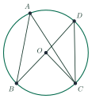
Trong hình vẽ, \(A\), \(B\), \(C\), \(D\) nằm trên đường tròn tâm \(O\). Góc nào là góc nội tiếp?
Answer: b. \(\widehat{BAC}\) has its vertex \(A\) on the circle and its sides contain the chords \(AB\), \(AC\). \(\widehat{BOC}\) is a central angle; the side \(BO\) of \(\widehat{OBC}\) is not a chord.
Đáp án b. \(\widehat{BAC}\) có đỉnh \(A\) nằm trên đường tròn và hai cạnh chứa hai dây \(AB\), \(AC\). \(\widehat{BOC}\) là góc ở tâm; cạnh \(BO\) của \(\widehat{OBC}\) không phải là dây.
The inscribed angle \(\widehat{ADB}\) intercepts the arc \(\overset{\frown}{AB}\) with \(m\overset{\frown}{AB}=100^\circ\). Find \(\widehat{ADB}\).
Góc nội tiếp \(\widehat{ADB}\) chắn cung \(\overset{\frown}{AB}\) có \(\text{sđ}\,\overset{\frown}{AB}=100^\circ\). Tính \(\widehat{ADB}\).
Answer: d. An inscribed angle is half its intercepted arc: \(\dfrac{100^\circ}{2}=50^\circ\).
Đáp án d. Số đo góc nội tiếp bằng nửa số đo cung bị chắn: \(\dfrac{100^\circ}{2}=50^\circ\).
In the figure, \(\widehat{AOB}=134^\circ\) and \(C\) lies on the major arc \(AB\). Find \(\widehat{ACB}\).
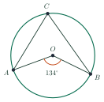
Trong hình vẽ, \(\widehat{AOB}=134^\circ\) và \(C\) nằm trên cung lớn \(AB\). Tính \(\widehat{ACB}\).
Answer: d. \(\widehat{ACB}\) and the central angle \(\widehat{AOB}\) intercept the same arc: \(\widehat{ACB}=\dfrac{134^\circ}{2}=67^\circ\).
Đáp án d. Góc nội tiếp \(\widehat{ACB}\) và góc ở tâm \(\widehat{AOB}\) cùng chắn cung \(AB\): \(\widehat{ACB}=\dfrac{134^\circ}{2}=67^\circ\).
B. True or FalseB. Đúng hoặc sai
In the figure, \(C\) and \(D\) lie on the same arc \(AB\) and \(\widehat{ACB}=71^\circ\). Then \(\widehat{ADB}=81^\circ\).
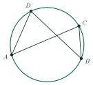
Trong hình vẽ, \(C\) và \(D\) nằm trên cùng một cung \(AB\) và \(\widehat{ACB}=71^\circ\). Khi đó \(\widehat{ADB}=81^\circ\).
False. Inscribed angles intercepting the same arc are equal: \(\widehat{ADB}=\widehat{ACB}=71^\circ\).
Sai. Các góc nội tiếp cùng chắn một cung thì bằng nhau: \(\widehat{ADB}=\widehat{ACB}=71^\circ\).
\(AB\) is a diameter of circle \((O)\) and \(C\) is a point of the circle (\(C\ne A,\,B\)). Then \(\widehat{ACB}=100^\circ\).
\(AB\) là một đường kính của đường tròn \((O)\), \(C\) là một điểm thuộc đường tròn (\(C\ne A,\,B\)). Khi đó \(\widehat{ACB}=100^\circ\).
False. An inscribed angle intercepting a semicircle is a right angle.
Sai. Góc nội tiếp chắn nửa đường tròn là góc vuông.
C. Short AnswerC. Trả lời ngắn
In the figure, \(AB\) is a diameter of \((O)\) and \(\widehat{ABC}=46^\circ\). Find \(\widehat{BAC}\) (in degrees).
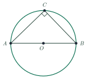
Trong hình vẽ, \(AB\) là đường kính của \((O)\) và \(\widehat{ABC}=46^\circ\). Tính số đo \(\widehat{BAC}\) (độ).
Enter a number.
Nhập một số.
Answer: 44. \(\widehat{ACB}=90^\circ\); \(\widehat{BAC}=90^\circ-46^\circ=44^\circ\).
Đáp số: 44. \(\widehat{ACB}=90^\circ\); \(\widehat{BAC}=90^\circ-46^\circ=44^\circ\).
The inscribed angle \(\widehat{ANB}=36^\circ\) intercepts the minor arc \(AB\). Find the measure of the minor arc \(AB\) (in degrees).
Góc nội tiếp \(\widehat{ANB}=36^\circ\) chắn cung nhỏ \(AB\). Tính số đo cung nhỏ \(AB\) (độ).
Enter a number.
Nhập một số.
Answer: 72. The arc is twice the inscribed angle: \(2\cdot36^\circ=72^\circ\).
Đáp số: 72. Số đo cung bị chắn gấp đôi góc nội tiếp: \(2\cdot36^\circ=72^\circ\).
D1. Self-practice – RememberingD1. Tự luyện – Mức Nhận biết
\(M\), \(N\), \(P\) lie on the circle \((O)\). Which angle is an inscribed angle intercepting the arc \(MN\)?
\(M\), \(N\), \(P\) nằm trên đường tròn \((O)\). Góc nào là góc nội tiếp chắn cung \(MN\)?
Answer: b. The vertex \(P\) is on the circle and the sides \(PM\), \(PN\) are chords.
Đáp án b. Đỉnh \(P\) nằm trên đường tròn, hai cạnh \(PM\), \(PN\) là hai dây.
\(CD\) is a diameter of a circle and \(E\) is another point of the circle. What is the measure of \(\widehat{CED}\)?
\(CD\) là một đường kính của đường tròn, \(E\) là một điểm khác của đường tròn. Số đo của \(\widehat{CED}\) bằng bao nhiêu?
Answer: b. It intercepts a semicircle (\(180^\circ\)): \(\dfrac{180^\circ}{2}=90^\circ\).
Đáp án b. Góc này chắn nửa đường tròn (\(180^\circ\)): \(\dfrac{180^\circ}{2}=90^\circ\).
In \((O)\), the inscribed angle \(\widehat{BAC}\) (less than \(90^\circ\)) and the central angle \(\widehat{BOC}\) intercept the same arc. Then…
Trong \((O)\), góc nội tiếp \(\widehat{BAC}\) (nhỏ hơn \(90^\circ\)) và góc ở tâm \(\widehat{BOC}\) cùng chắn một cung. Khi đó…
Answer: c. An inscribed angle is half the central angle (and half the arc) it intercepts.
Đáp án c. Góc nội tiếp bằng nửa góc ở tâm (và bằng nửa số đo cung) cùng chắn một cung.
D2. Self-practice – UnderstandingD2. Tự luyện – Mức Thông hiểu
In the figure, \(\widehat{AOB}=72^\circ\) and \(C\) lies on the minor arc \(AB\). Find \(\widehat{ACB}\).
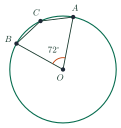
Trong hình vẽ, \(\widehat{AOB}=72^\circ\) và \(C\) nằm trên cung nhỏ \(AB\). Tính \(\widehat{ACB}\).
Answer: a. \(\widehat{ACB}\) intercepts the major arc \(AB\) of \(360^\circ-72^\circ=288^\circ\): \(\widehat{ACB}=144^\circ\).
Đáp án a. \(\widehat{ACB}\) chắn cung lớn \(AB\) có số đo \(360^\circ-72^\circ=288^\circ\): \(\widehat{ACB}=144^\circ\).
Points \(A\), \(B\), \(C\) divide a circle into three arcs \(AB\), \(BC\), \(CA\) in the ratio \(2:4:6\). Find the smallest angle of triangle \(ABC\).
Ba điểm \(A\), \(B\), \(C\) chia đường tròn thành ba cung \(AB\), \(BC\), \(CA\) tỉ lệ với \(2:4:6\). Tính góc nhỏ nhất của tam giác \(ABC\).
Answer: d. The arcs are \(60^\circ\), \(120^\circ\), \(180^\circ\); each angle of the triangle is half the arc opposite it: \(30^\circ\), \(60^\circ\), \(90^\circ\).
Đáp án d. Ba cung có số đo \(60^\circ\), \(120^\circ\), \(180^\circ\); mỗi góc của tam giác bằng nửa cung bị chắn: \(30^\circ\), \(60^\circ\), \(90^\circ\).
\(AB\) is a chord of \((O)\) with \(\widehat{OAB}=30^\circ\); \(C\) lies on the major arc \(AB\). Find \(\widehat{ACB}\).
\(AB\) là một dây của \((O)\) với \(\widehat{OAB}=30^\circ\); \(C\) nằm trên cung lớn \(AB\). Tính \(\widehat{ACB}\).
Answer: d. \(OA=OB\) so \(\widehat{AOB}=180^\circ-2\cdot30^\circ=120^\circ\); \(\widehat{ACB}=\dfrac{120^\circ}{2}=60^\circ\).
Đáp án d. \(OA=OB\) nên \(\widehat{AOB}=180^\circ-2\cdot30^\circ=120^\circ\); \(\widehat{ACB}=\dfrac{120^\circ}{2}=60^\circ\).
D3. Self-practice – Basic applicationD3. Tự luyện – Mức Vận dụng thấp
Triangle \(ABC\) is inscribed in \((O)\), \(\widehat{BAC}=76^\circ\), \(\widehat{ABC}=64^\circ\). Find the measure of the arc \(AB\) not containing the third vertex.
Tam giác \(ABC\) nội tiếp đường tròn \((O)\), \(\widehat{BAC}=76^\circ\), \(\widehat{ABC}=64^\circ\). Tính số đo cung \(AB\) không chứa đỉnh còn lại.
Answer: b. \(\widehat{ACB}=180^\circ-76^\circ-64^\circ=40^\circ\). The arc AB is twice the opposite angle: \(80^\circ\).
Đáp án b. \(\widehat{ACB}=180^\circ-76^\circ-64^\circ=40^\circ\). Cung AB có số đo gấp đôi góc đối diện: \(80^\circ\).
In the figure, \(A\), \(B\), \(C\), \(D\) lie on a circle in this order, \(\widehat{BAC}=52^\circ\) and \(\widehat{ACB}=49^\circ\). Find \(\widehat{ADC}\).
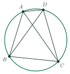
Trong hình vẽ, \(A\), \(B\), \(C\), \(D\) nằm trên một đường tròn theo thứ tự đó, \(\widehat{BAC}=52^\circ\) và \(\widehat{ACB}=49^\circ\). Tính \(\widehat{ADC}\).
Answer: c. \(\widehat{BDC}=\widehat{BAC}=52^\circ\) (same arc \(BC\)); \(\widehat{ADB}=\widehat{ACB}=49^\circ\) (same arc \(AB\)); \(\widehat{ADC}=52^\circ+49^\circ=101^\circ\).
Đáp án c. \(\widehat{BDC}=\widehat{BAC}=52^\circ\) (cùng chắn cung \(BC\)); \(\widehat{ADB}=\widehat{ACB}=49^\circ\) (cùng chắn cung \(AB\)); \(\widehat{ADC}=52^\circ+49^\circ=101^\circ\).
On a round clock face, \(P\) is at the number 12, \(M\) at the number 3 and \(N\) at the number 9. Find \(\widehat{MPN}\).
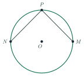
Trên mặt đồng hồ hình tròn, điểm \(P\) ở số 12, điểm \(M\) ở số 3 và điểm \(N\) ở số 9. Tính \(\widehat{MPN}\).
Answer: b. Neighboring numbers are \(30^\circ\) apart, so the arc \(MN\) not containing \(P\) is \(6\cdot30^\circ=180^\circ\); \(\widehat{MPN}=\dfrac{180^\circ}{2}=90^\circ\).
Đáp án b. Hai số liền nhau cách nhau \(30^\circ\) nên cung \(MN\) không chứa \(P\) có số đo \(6\cdot30^\circ=180^\circ\); \(\widehat{MPN}=\dfrac{180^\circ}{2}=90^\circ\).
D4. Self-practice – Advanced applicationD4. Tự luyện – Mức Vận dụng
The front edge \(AB\) of a stage is a chord of a circle with center \(O\) and \(\widehat{AOB}=112^\circ\). The seats \(M\), \(N\) are on the major arc \(AB\). From each seat, under what angle is the stage edge seen?
Mép sân khấu \(AB\) là một dây của đường tròn tâm \(O\) với \(\widehat{AOB}=112^\circ\). Hai ghế \(M\), \(N\) nằm trên cung lớn \(AB\). Từ mỗi ghế, người xem nhìn mép sân khấu dưới góc bao nhiêu độ?
Answer: a. \(\widehat{AMB}\) and \(\widehat{ANB}\) intercept the same arc \(AB\): both equal \(\dfrac{112^\circ}{2}=56^\circ\).
Đáp án a. \(\widehat{AMB}\) và \(\widehat{ANB}\) cùng chắn cung \(AB\): đều bằng \(\dfrac{112^\circ}{2}=56^\circ\).
Triangle \(ABC\) is inscribed in \((O;\,R)\) with \(AB=8\) cm and \(\widehat{ACB}=30^\circ\). Find \(R\).
Tam giác \(ABC\) nội tiếp đường tròn \((O;\,R)\) có \(AB=8\) cm và \(\widehat{ACB}=30^\circ\). Tính \(R\).
Answer: b. \(\widehat{AOB}=2\cdot30^\circ=60^\circ\) and \(OA=OB\): triangle \(OAB\) is equilateral, \(R=AB=8\) cm.
Đáp án b. \(\widehat{AOB}=2\cdot30^\circ=60^\circ\) và \(OA=OB\): tam giác \(OAB\) đều, \(R=AB=8\) cm.
Triangle \(ABC\) is inscribed in \((O)\) and \(\widehat{BAC}=38^\circ\) (acute triangle). Find \(\widehat{OBC}\).
Tam giác nhọn \(ABC\) nội tiếp đường tròn \((O)\) và \(\widehat{BAC}=38^\circ\). Tính \(\widehat{OBC}\).
Answer: c. \(\widehat{BOC}=2\cdot38^\circ=76^\circ\); \(OB=OC\), so \(\widehat{OBC}=\dfrac{180^\circ-76^\circ}{2}=52^\circ\).
Đáp án c. \(\widehat{BOC}=2\cdot38^\circ=76^\circ\); \(OB=OC\) nên \(\widehat{OBC}=\dfrac{180^\circ-76^\circ}{2}=52^\circ\).
8Common MistakesLỗi thường gặp
Calling a central angle “inscribed”. The vertex of an inscribed angle is on the circle, not at the center.
Nhầm góc ở tâm là góc nội tiếp. Đỉnh của góc nội tiếp nằm trên đường tròn, không phải ở tâm.
Doubling instead of halving. Inscribed angle \(=\tfrac12\) arc; arc \(=2\cdot\) inscribed angle.
Nhân đôi thay vì chia đôi. Góc nội tiếp \(=\tfrac12\) số đo cung; số đo cung \(=2\cdot\) góc nội tiếp.
Using the wrong arc. If the vertex is on the minor arc \(AB\), the angle intercepts the major arc.
Dùng nhầm cung. Nếu đỉnh nằm trên cung nhỏ \(AB\) thì góc chắn cung lớn \(AB\).
Forgetting the right angle. If \(AB\) is a diameter, every \(\widehat{ACB}\) is \(90^\circ\).
Quên góc vuông. Nếu \(AB\) là đường kính thì mọi góc \(\widehat{ACB}\) đều bằng \(90^\circ\).
9Lesson SummaryTổng kết
Inscribed angle: vertex on the circle, sides containing two chords; it intercepts the arc inside it.
Góc nội tiếp: đỉnh nằm trên đường tròn, hai cạnh chứa hai dây; nó chắn cung nằm bên trong góc.
Inscribed angle \(=\tfrac12\) intercepted arc.
Số đo góc nội tiếp bằng nửa số đo cung bị chắn.
Same arc ⇒ equal angles; inscribed angle \(=\tfrac12\) central angle; angle in a semicircle \(=90^\circ\).
Cùng chắn một cung ⇒ bằng nhau; góc nội tiếp \(=\tfrac12\) góc ở tâm cùng chắn cung; góc nội tiếp chắn nửa đường tròn là góc vuông.
Key English: inscribed angle, intercepted arc, subtend, central angle, semicircle.
Thuật ngữ cần nhớ (chạm vào để xem tiếng Anh): góc nội tiếp, cung bị chắn, chắn, góc ở tâm, nửa đường tròn.